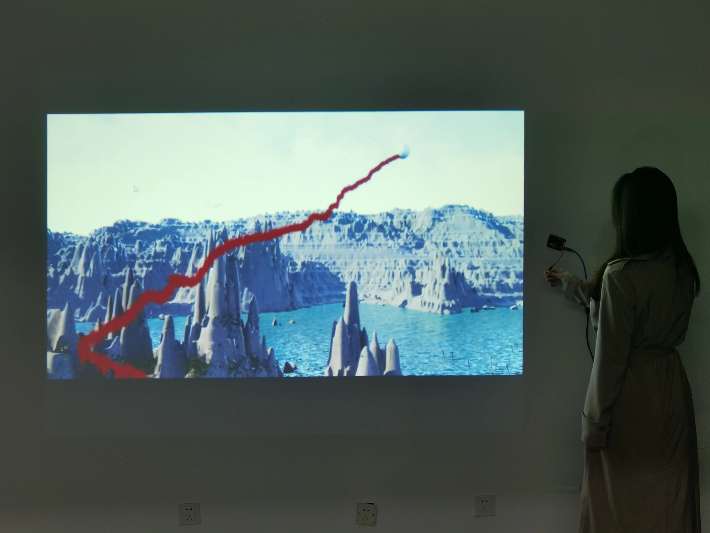
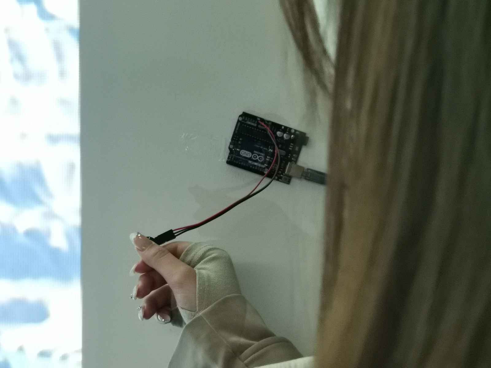
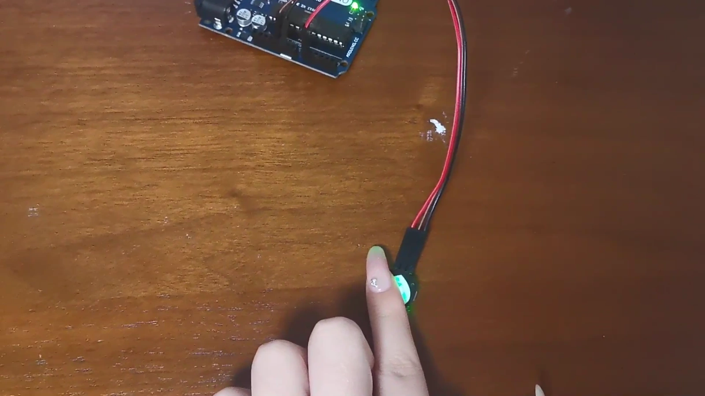
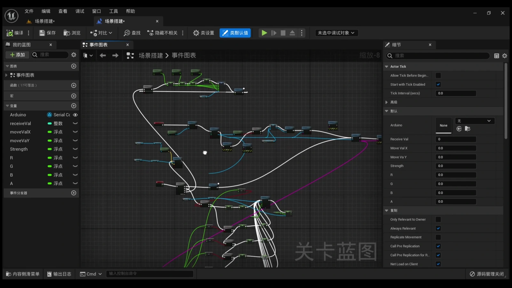
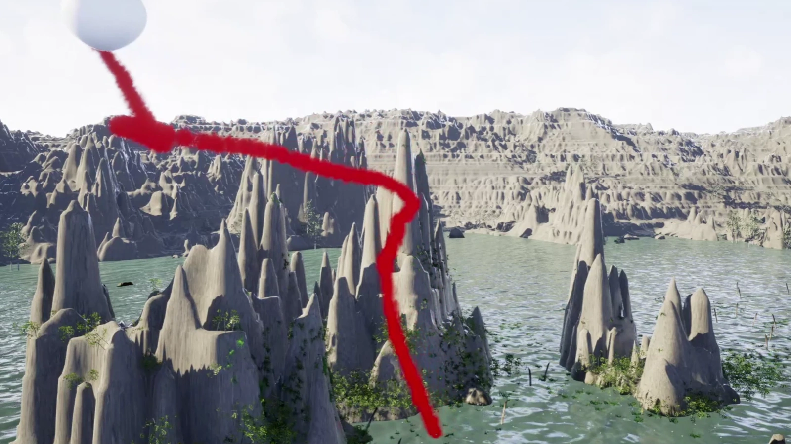
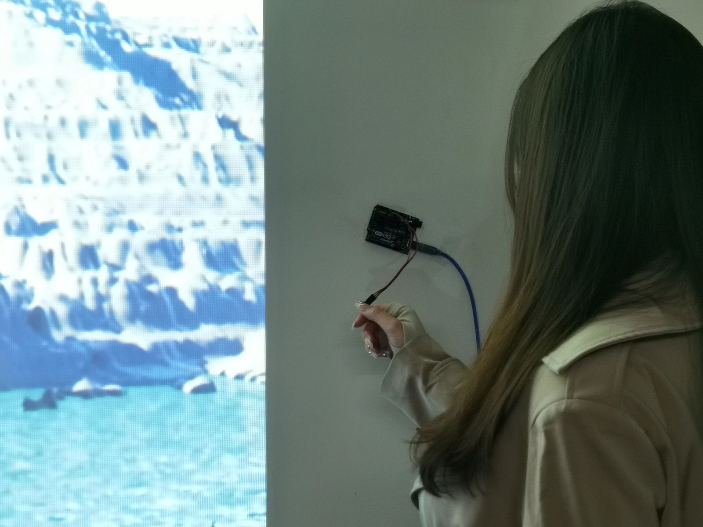
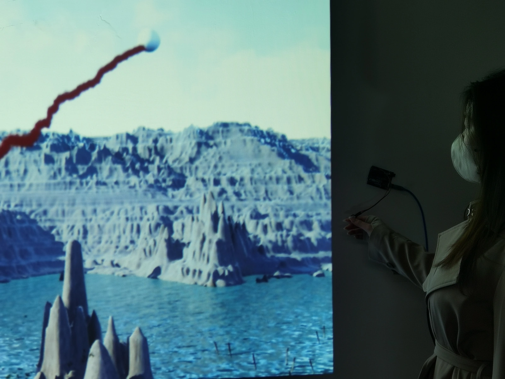

Physical-computing prototype
FLUTTER
A fingertip sensor controls a balloon in a projected landscape.


An Arduino and Unreal Engine prototype that turns pulse input into movement and a coloured trail.
Watch the prototype
The original film introduces the scene, shows the hardware and Blueprint logic, and demonstrates the moving balloon and coloured trail. Its captions describe changes in balloon speed and direction in relation to heart rate.
Sensor, processing and visual response
The fingertip sensor supplies the input; the prototype processes it and changes the balloon’s movement. These photographs and recording frames show the three parts.






The physical setup
The visitor holds the wired sensor while watching the balloon and its trail on the wall.




Signal feedback and recovery
A next version should show when it is receiving a signal and what happens when fingertip contact is lost. Those states need testing with participants.
Prototype demonstration, not a health intervention. The original film links heart rate to balloon speed and direction; the documentation does not establish calibration accuracy, exact mapping parameters or effects on mood.